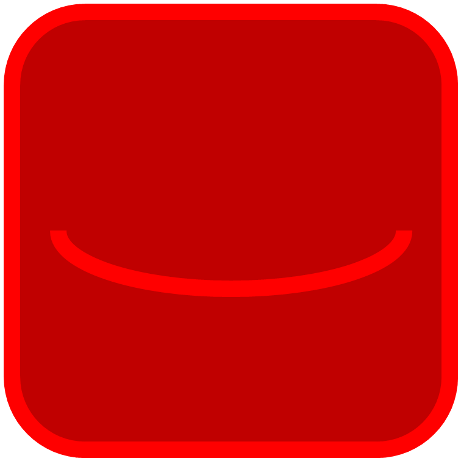
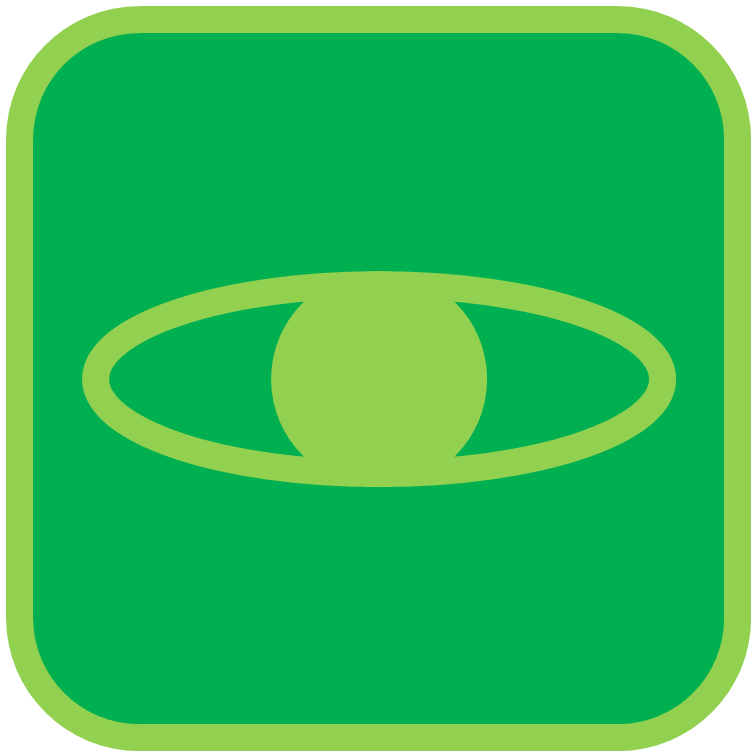

<!DOCTYPE html>
<head>
<!-- leaflet -->
<link rel="stylesheet" href="https://unpkg.com/leaflet@1.9.4/dist/leaflet.css" integrity="sha256-p4NxAoJBhIIN+hmNHrzRCf9tD/miZyoHS5obTRR9BMY=" crossorigin="" />
<script src="https://unpkg.com/leaflet@1.9.4/dist/leaflet.js" integrity="sha256-20nQCchB9co0qIjJZRGuk2/Z9VM+kNiyxNV1lvTlZBo=" crossorigin=""></script>
<style>
  html, body {
    margin: 0;
    padding: 0;
  }
	#map{
	height: 100vh;
	position: relative;
    z-index: 0;
	}

    #UI {
	text-align: center;
	color: white;
	background: rgba(155, 255, 128, 0.5); 
    position: fixed;
    top: 10%;
    left: 75%;
    z-index: 1;
    display: flex;
    flex-direction: column;
    gap: 10px;
    }

    #UI div {
	  flex-direction: row;
      padding: 15px;
      border-radius: 10px;
      text-align: left;
      cursor: pointer;
    }
	#UI img {
		width:20px;
		height:20px;
		padding-right: 15px;
	}
    #UI div:hover {
      background: rgba(155, 255, 128, 1);
    }
  </style>
</head>
<body>
<div id='map'>
</div>
<div id="UI">
</div>
<script src="Granica_Mapy_GEOJS.js"></script>
<script src="Chodniki.js"></script>
<script>
	// mapa
var map = L.map('map').setView([52.2829,20.9863],15);
	// podkład
L.tileLayer('https://tile.openstreetmap.org/{z}/{x}/{y}.png', {
maxZoom: 19,
attribution: '&copy; <a href="http://www.openstreetmap.org/copyright">OpenStreetMap</a>'
}).addTo(map);

	// style
function Styl_Granic(feature) {
  return {
    fillColor: "#FFFFFF",
    fillOpacity: 0,
    color: '#000000',
    weight: 5,
  };
}
function Styl_Chodników(feature) {
  return {
    color: '#A6A486',
    weight: 3,
  };
}
	// warstwy
const Ortofotomapa = L.imageOverlay('Orto.png', [[52.293208224840,21.003919155542], [52.267935548808,20.968176371000
]])
const Granica = L.geoJSON(granica,{style:Styl_Granic})
const Chodniki = L.geoJSON(chodniki,{style:Styl_Chodników})
	// dodanie do mapy
Ortofotomapa.addTo(map);
Granica.addTo(map);
	// lista warstw
var lista_warstw = [Ortofotomapa, Granica, Chodniki];
var lista_widoczności = [true, true, false];
var lista_nazw_warstw = ["Ortofotomapa", "Granica","Chodniki"];
var obrazek = "";
	// Zmiana widoczności warstwy
function zmien_widocznosc_warstwy(nr_Warstwy){
	console.log("chodniki usunięte")
	if (lista_widoczności[nr_Warstwy]){
		map.removeLayer(lista_warstw[nr_Warstwy]);
		var div = document.getElementById(lista_nazw_warstw[nr_Warstwy]);
		div.innerHTML = '<span>'+lista_nazw_warstw[nr_Warstwy]+'</span>';
		}
	else{
	map.addLayer(lista_warstw[nr_Warstwy]);
	var div = document.getElementById(lista_nazw_warstw[nr_Warstwy]);
	div.innerHTML = '<span>'+lista_nazw_warstw[nr_Warstwy]+'</span>';
	}
	lista_widoczności[nr_Warstwy] = !lista_widoczności[nr_Warstwy];
}
	// rysowanie UI
function rysuj_UI(){
	var div = document.getElementById("UI");
	var UI = "<h3>Warstwy</h3>"
	for(var i=0;i<3;i++){
		if (lista_widoczności[i]){
			obrazek = "";
		}
		else{
			obrazek = "";
		}
		UI += '<div id="'+lista_nazw_warstw[i]+'" onclick="zmien_widocznosc_warstwy('+String(i)+')">'+obrazek+'<span>'+lista_nazw_warstw[i]+'</span></div>';
	}
	div.innerHTML = UI
}
rysuj_UI()
</script>
</body>
